![]()
| Country | Urb. (x) |
|---|---|
| Afghanistan | 18.6118 |
| Albania | 40.4442 |
| Algeria | 52.6092 |
| American Samoa | 79.7625 |
| … | … |
| Zimbabwe | 26.3045 |
| \(\bar{x}\) | 51.33 |
Statistical Analysis
Lecture 7: T-Tests and Correlations
Lecture Overview
- From z-tests to t-tests
- Confidence intervals for population estimates
- The Pearson correlation coefficient
- Correlation vs. causation
T-Tests
Recall: Z-Test Assumptions
- Population mean \(\mu\) is known
- Population standard deviation \(\sigma\) is known
- The second assumption is rarely met in practice
Solution: use the t-test, which replaces \(\sigma\) with the sample standard deviation \(s_x\).
The t-Distribution
- Symmetric, bell-shaped, mean = 0
- Does not require known \(\sigma\)
- Defined by degrees of freedom (df = \(n - 1\))
- Heavier tails than normal for small \(n\)
- Converges to normal as \(n\) increases
t-Distribution vs. Normal
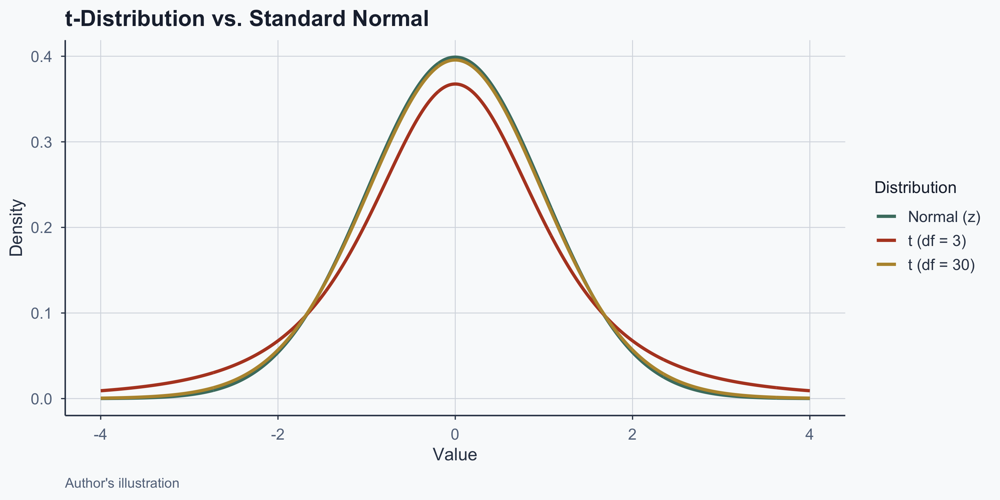
Figure 1: The t-distribution has heavier tails for small samples
Z-Observed vs. T-Observed
Z-observed (requires known \(\sigma\)):
\[Z_{\text{obs}} = \frac{\bar{X} - \mu}{\sigma / \sqrt{n}}\]
T-observed (uses sample \(s_x\)):
\[t_{\text{obs}} = \frac{\bar{X} - \mu}{s_x / \sqrt{n}}\]
The only difference: \(\sigma \to s_x\)
Degrees of Freedom
- df = independent pieces of information
- For a one-sample t-test: \(\text{df} = n - 1\)
- Lower df = heavier tails = harder to reject \(H_0\)
- As df \(\to \infty\), t-distribution \(\to\) normal
NHST Steps (Same as Before)
- Form groups in the data
- Define \(H_0\) (no difference)
- Set \(\alpha\) (default = 0.05)
- Choose one- or two-tailed test
- Find the critical value
- Calculate the observed value
Example: EU vs. Latin America
Does life expectancy differ between EU and Latin America?
| Statistic | Latin America | EU |
|---|---|---|
| Mean life exp. | 61.914 | 67.114 |
| SD | 5.14 | 5.55 |
| n | 23 | 27 |
- \(H_0\): \(\mu_{\text{Latam}} = \mu_{\text{EU}}\)
- \(H_1\): \(\mu_{\text{Latam}} \neq \mu_{\text{EU}}\) (two-tailed)
T-Test Result: Life Expectancy
| Result | Value |
|---|---|
| t-statistic | -3.4364 |
| df | 47.64 |
| p-value | 0.001232 |
| 95% CI | [-8.24, -2.16] |
p < 0.05: reject \(H_0\). EU life expectancy is significantly higher than Latin America’s.
Visualizing the T-Test
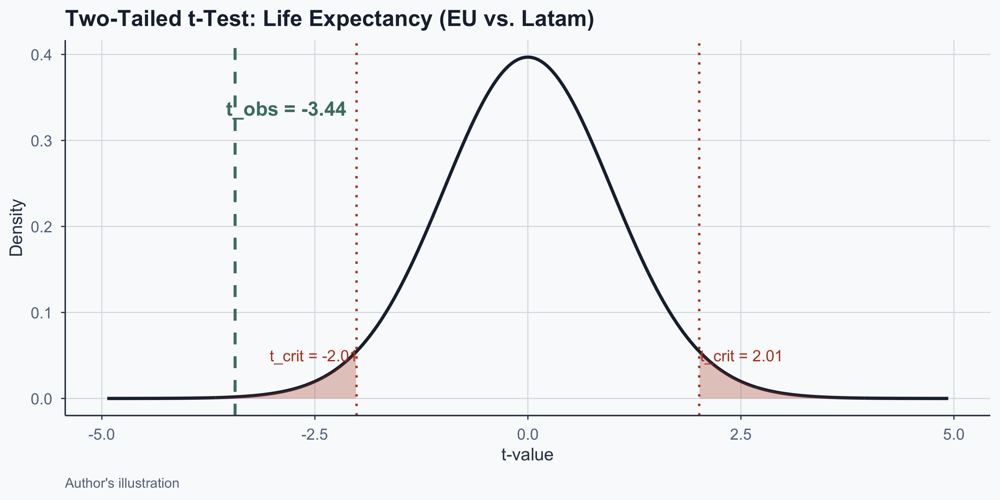
Figure 2: Observed t falls in the rejection region
Checking Assumptions: QQ Plots
Before trusting the test, check normality of each group:
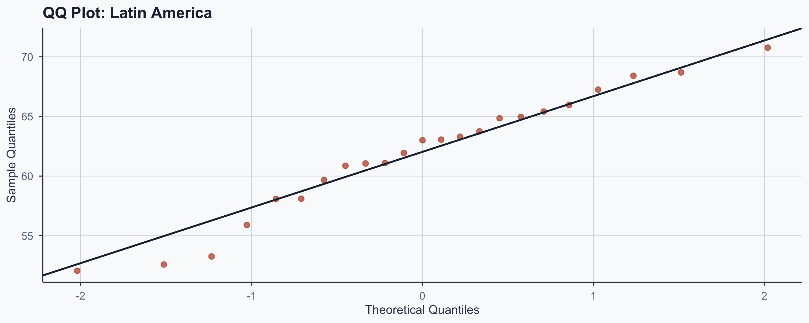
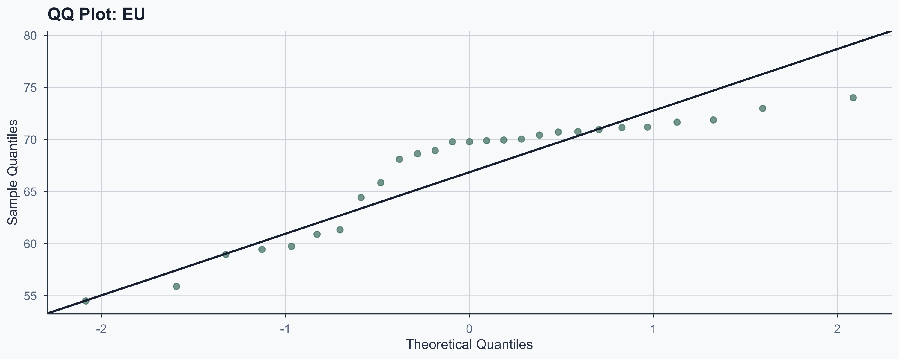
Checking Assumptions: Shapiro-Wilk
| Group | W statistic | p-value | Normal? |
|---|---|---|---|
| Latin America | 0.963 | 0.5255 | Yes |
| EU | 0.8486 | 0.0011 | No |
- If p > 0.05: we cannot reject normality
- T-test is robust to mild non-normality when n > 20
Latin America vs. South America
Latin America includes Central America and Caribbean — not just South America:
| Region | Countries | n |
|---|---|---|
| Latin America | 23 countries (incl. Mexico, Cuba, etc.) | 23 |
| South America | 12 countries (Argentina to Venezuela) | 12 |
- Which region you choose affects your sample size
- Let’s see what happens with the smaller group
The Small-n Problem
| South America (n=12) | EU (n=27) | |
|---|---|---|
| Mean | 62.965 | 67.114 |
| SD | 4.17 | 5.55 |
| Result | S. America vs. EU | Latam vs. EU |
|---|---|---|
| 95% CI | [-7.45, -0.85] | [-8.24, -2.16] |
| CI width | 6.6 | 6.09 |
| p-value | 0.0156 | 0.001232 |
Lesson: Sample Size Drives Power
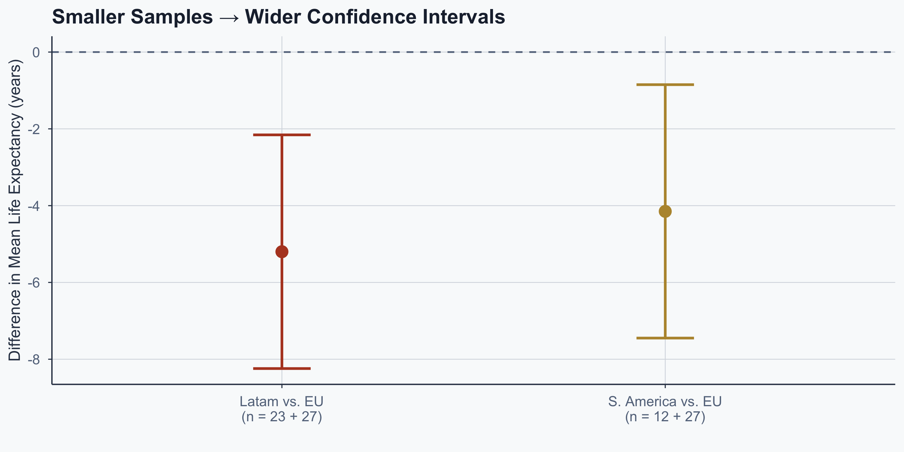
Figure 5
- Same underlying effect, but less precision with n = 12
Second Comparison: Urbanization
| Statistic | Latin America | EU |
|---|---|---|
| Mean urb. | 59.018 | 67.138 |
| SD | 16.3 | 13.12 |
| Result | Value |
|---|---|
| t-statistic | -1.9176 |
| p-value | 0.06195 |
p = 0.062 > 0.05: fail to reject \(H_0\). No significant difference in urbanization.
Could We Be Wrong?
| \(H_0\) True | \(H_0\) False | |
|---|---|---|
| Reject \(H_0\) | Type I Error (\(\alpha\)) | Correct |
| Retain \(H_0\) | Correct | Type II Error (\(\beta\)) |
- Rejected \(H_0\) for life expectancy — Type I error possible?
- Retained \(H_0\) for urbanization — Type II error possible?
- Lowering \(\alpha\) reduces Type I but increases Type II
Z-Test vs. T-Test
| Criterion | Z-Test | T-Test |
|---|---|---|
| Pop. variance | Known | Unknown |
| Sample size | Large (n > 30) | Any (esp. small) |
| Distribution | Normal | Student’s t |
| Practice | Rarely used | Frequently used |
Social data typically come from samples, not populations, so the t-test is the standard tool.
Confidence Intervals
What Is a Confidence Interval?
- Sample estimates vary from true population parameters
- A CI gives a plausible range for the parameter
- 95% CI: repeated sampling → 95% of CIs contain \(\mu\)
Confidence Interval Formula
\[CI = \bar{X} \pm t \times \frac{s_x}{\sqrt{n}}\]
Where:
- \(\bar{X}\): sample mean
- \(s_x\): sample standard deviation
- \(n\): sample size
- \(t\): critical value (for 95% CI \(\approx\) 1.96)
Worked Example: Latin America
\[CI = 59.018 \pm 2.074 \times \frac{16.3}{\sqrt{23}}\]
\[CI = [51.97,\; 66.07]\]
Our best estimate for mean LATAM urbanization is 59.018, but it plausibly ranges from 51.97 to 66.07.
Visualizing Confidence Intervals
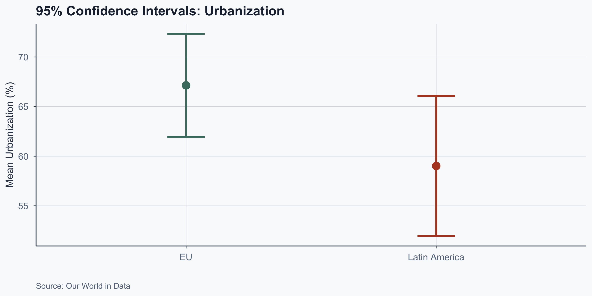
Figure 6: 95% confidence intervals for regional urbanization means
Interpreting Overlapping CIs
- The CIs overlap between the two regions
- This is consistent with failing to reject \(H_0\)
- Overlapping CIs suggest no significant difference
- Non-overlapping CIs would suggest a significant gap
Correlation
What Is Correlation?
- Measures strength and direction of a linear relationship
- Ranges from \(-1\) (perfect negative) to \(+1\) (perfect positive)
- 0 means no linear relationship
- Example: urbanization and life expectancy
Scatterplot: World
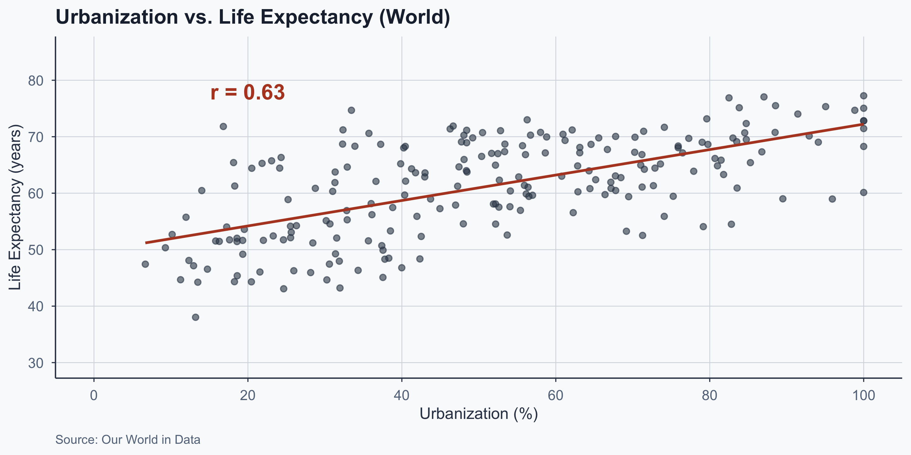
Figure 7: Urbanization vs. life expectancy across all countries
Scatterplots: EU vs. Latin America
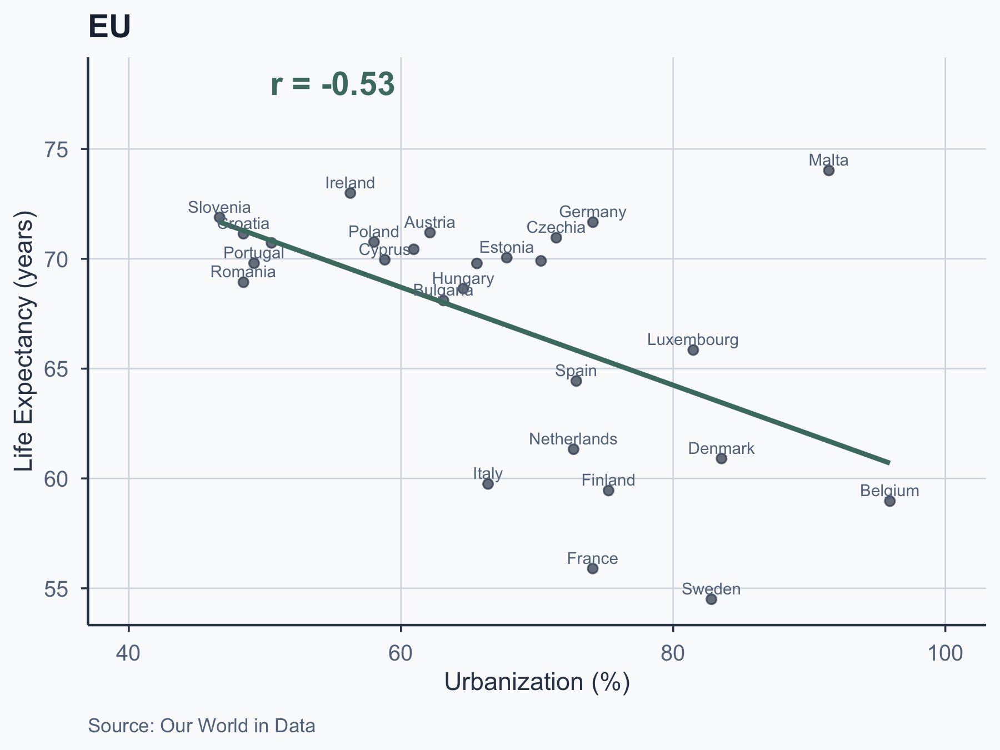
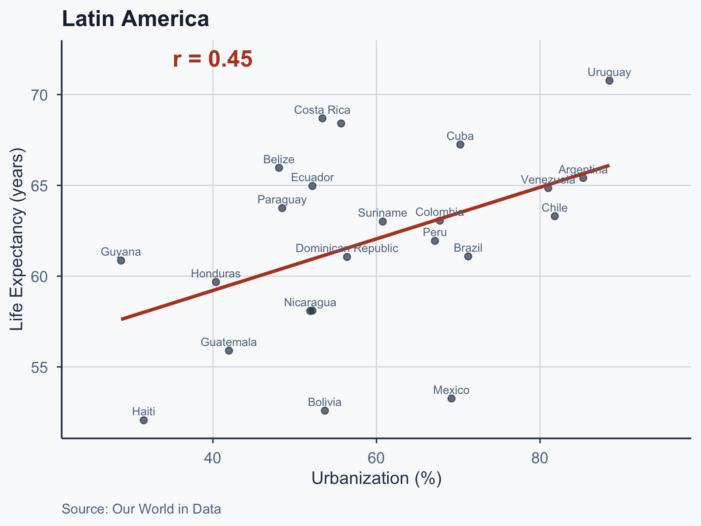
Pearson Correlation: Formula
\[r = \frac{\sum(x_i - \bar{x})(y_i - \bar{y}) / (n-1)}{s_x \cdot s_y}\]
Where:
- \(x_i, y_i\): observed values
- \(\bar{x}, \bar{y}\): sample means
- \(s_x, s_y\): sample standard deviations
- \(n\): sample size
Computing \(r\): 13 Steps
- Mean of X (\(\bar{x}\))
- Mean of Y (\(\bar{y}\))
- Deviation scores for X
- Deviation scores for Y
- Square deviations for X
- Square deviations for Y
- Sum squared deviations for X
- Sum squared deviations for Y
- Standard deviation of X (\(s_x\))
- Standard deviation of Y (\(s_y\))
- Cross-products
- Sum cross-products
- Pearson \(r\)
Step 1: Mean of X
X = Urbanization
\[\bar{x} = \frac{\sum x_i}{n} = 51.33\]
Step 2: Mean of Y
Y = Life Expectancy
\[\bar{y} = \frac{\sum y_i}{n} = 61.259\]
| Country | Urb. (x) | Life Exp. (y) |
|---|---|---|
| Afghanistan | 18.6118 | 45.3833 |
| Albania | 40.4442 | 68.2861 |
| Algeria | 52.6092 | 57.5301 |
| American Samoa | 79.7625 | 68.6375 |
| … | … | … |
| Zimbabwe | 26.3045 | 54.2472 |
| \(\bar{x}\) | 51.33 | |
| \(\bar{y}\) | 61.259 |
Step 3: Deviation Scores for X
\[x_i - \bar{x}\]
| Country | Urb. (x) | \(x_i - \bar{x}\) |
|---|---|---|
| Afghanistan | 18.6118 | 18.612 - 51.33 |
| Albania | 40.4442 | 40.444 - 51.33 |
| Algeria | 52.6092 | 52.609 - 51.33 |
| American Samoa | 79.7625 | 79.762 - 51.33 |
| … | … | … |
| Zimbabwe | 26.3045 | 26.304 - 51.33 |
| \(\bar{x}\) | 51.33 |
Step 3: Deviation Scores for X
\[x_i - \bar{x}\]
| Country | Urb. (x) | \(x_i - \bar{x}\) |
|---|---|---|
| Afghanistan | 18.6118 | -32.7179 |
| Albania | 40.4442 | -10.8855 |
| Algeria | 52.6092 | 1.2795 |
| American Samoa | 79.7625 | 28.4328 |
| … | … | … |
| Zimbabwe | 26.3045 | -25.0252 |
| \(\bar{x}\) | 51.33 |
Step 4: Deviation Scores for Y
\[y_i - \bar{y}\]
| Country | Life Exp. (y) | \(y_i - \bar{y}\) |
|---|---|---|
| Afghanistan | 45.3833 | 45.383 - 61.259 |
| Albania | 68.2861 | 68.286 - 61.259 |
| Algeria | 57.5301 | 57.53 - 61.259 |
| American Samoa | 68.6375 | 68.638 - 61.259 |
| … | … | … |
| Zimbabwe | 54.2472 | 54.247 - 61.259 |
| \(\bar{y}\) | 61.259 |
Step 4: Deviation Scores for Y
\[y_i - \bar{y}\]
| Country | Life Exp. (y) | \(y_i - \bar{y}\) |
|---|---|---|
| Afghanistan | 45.3833 | -15.8757 |
| Albania | 68.2861 | 7.0271 |
| Algeria | 57.5301 | -3.7289 |
| American Samoa | 68.6375 | 7.3785 |
| … | … | … |
| Zimbabwe | 54.2472 | -7.0118 |
| \(\bar{y}\) | 61.259 |
Step 5: Squared Deviations for X
\[(x_i - \bar{x})^2\]
| Country | \(x_i - \bar{x}\) | \((x_i - \bar{x})^2\) |
|---|---|---|
| Afghanistan | -32.7179 | (-32.7179)² |
| Albania | -10.8855 | (-10.8855)² |
| Algeria | 1.2795 | (1.2795)² |
| American Samoa | 28.4328 | (28.4328)² |
| … | … | … |
| Zimbabwe | -25.0252 | (-25.0252)² |
Step 5: Squared Deviations for X
\[(x_i - \bar{x})^2\]
| Country | \(x_i - \bar{x}\) | \((x_i - \bar{x})^2\) |
|---|---|---|
| Afghanistan | -32.7179 | 1070.4623 |
| Albania | -10.8855 | 118.4943 |
| Algeria | 1.2795 | 1.6372 |
| American Samoa | 28.4328 | 808.4251 |
| … | … | … |
| Zimbabwe | -25.0252 | 626.2598 |
Step 6: Squared Deviations for Y
\[(y_i - \bar{y})^2\]
| Country | \(y_i - \bar{y}\) | \((y_i - \bar{y})^2\) |
|---|---|---|
| Afghanistan | -15.8757 | (-15.8757)² |
| Albania | 7.0271 | (7.0271)² |
| Algeria | -3.7289 | (-3.7289)² |
| American Samoa | 7.3785 | (7.3785)² |
| … | … | … |
| Zimbabwe | -7.0118 | (-7.0118)² |
Step 6: Squared Deviations for Y
\[(y_i - \bar{y})^2\]
| Country | \(y_i - \bar{y}\) | \((y_i - \bar{y})^2\) |
|---|---|---|
| Afghanistan | -15.8757 | 252.038 |
| Albania | 7.0271 | 49.3797 |
| Algeria | -3.7289 | 13.9047 |
| American Samoa | 7.3785 | 54.4417 |
| … | … | … |
| Zimbabwe | -7.0118 | 49.1656 |
Step 7: Sum Squared Deviations for X
\[\sum_{i=1}^{n}(x_i - \bar{x})^2 = 1070.4623 + 118.4943 + \cdots + 626.2598\]
\[\sum_{i=1}^{215}(x_i - \bar{x})^2 = 1.2512211\times 10^{5}\]
Step 8: Sum Squared Deviations for Y
\[\sum_{i=1}^{n}(y_i - \bar{y})^2 = 252.038 + 49.3797 + \cdots + 49.1656\]
\[\sum_{i=1}^{215}(y_i - \bar{y})^2 = 1.5988861\times 10^{4}\]
Step 9: Standard Deviation of X
\[s_x = \sqrt{\frac{\sum(x_i - \bar{x})^2}{n-1}} = \sqrt{\frac{1.2512211\times 10^{5}}{215 - 1}} = \sqrt{\frac{1.2512211\times 10^{5}}{214}}\]
\[s_x = 24.18021\]
Step 10: Standard Deviation of Y
\[s_y = \sqrt{\frac{\sum(y_i - \bar{y})^2}{n-1}} = \sqrt{\frac{1.5988861\times 10^{4}}{215 - 1}} = \sqrt{\frac{1.5988861\times 10^{4}}{214}}\]
\[s_y = 8.64374\]
Step 11: Cross-Products
\[(x_i - \bar{x})(y_i - \bar{y})\]
| Country | \(x_i - \bar{x}\) | \(y_i - \bar{y}\) | \((x_i-\bar{x})(y_i-\bar{y})\) |
|---|---|---|---|
| Afghanistan | -32.7179 | -15.8757 | (-32.7179)(-15.8757) |
| Albania | -10.8855 | 7.0271 | (-10.8855)(7.0271) |
| Algeria | 1.2795 | -3.7289 | (1.2795)(-3.7289) |
| American Samoa | 28.4328 | 7.3785 | (28.4328)(7.3785) |
| … | … | … | … |
| Zimbabwe | -25.0252 | -7.0118 | (-25.0252)(-7.0118) |
Step 11: Cross-Products
\[(x_i - \bar{x})(y_i - \bar{y})\]
| Country | \(x_i - \bar{x}\) | \(y_i - \bar{y}\) | \((x_i-\bar{x})(y_i-\bar{y})\) |
|---|---|---|---|
| Afghanistan | -32.7179 | -15.8757 | 519.4201 |
| Albania | -10.8855 | 7.0271 | -76.4933 |
| Algeria | 1.2795 | -3.7289 | -4.7713 |
| American Samoa | 28.4328 | 7.3785 | 209.7904 |
| … | … | … | … |
| Zimbabwe | -25.0252 | -7.0118 | 175.472 |
Step 12: Sum of Cross-Products
\[\sum_{i=1}^{n}(x_i - \bar{x})(y_i - \bar{y}) = 519.4201 + -76.4933 + \cdots + 175.472\]
\[\sum_{i=1}^{215}(x_i - \bar{x})(y_i - \bar{y}) = 2.819337\times 10^{4}\]
Step 13: Pearson \(r\)
\[r = \frac{\frac{\sum(x_i - \bar{x})(y_i - \bar{y})}{n-1}}{s_x \cdot s_y} = \frac{\frac{2.819337\times 10^{4}}{214}}{24.18021 \times 8.64374}\]
\[r = \frac{131.7447}{209.0076} = 0.6303347\]
Computing \(r\) in R
| Statistic | Value |
|---|---|
| Pearson \(r\) | 0.6303 |
| t-statistic | 11.85 |
| p-value | <2e-16 |
\(r =\) 0.63: strong positive correlation. Statistically significant at \(\alpha = 0.05\).
Interpreting Correlation Strength
| \(|r|\) Range | Interpretation |
|---|---|
| 0.00 – 0.19 | Very weak |
| 0.20 – 0.39 | Weak |
| 0.40 – 0.59 | Moderate |
| 0.60 – 0.79 | Strong |
| 0.80 – 1.00 | Very strong |
Our \(r =\) 0.63 falls in the strong range.
Caveat: These are Cohen-style rules of thumb, not universal laws. What counts as “strong” depends on the field — \(r = 0.3\) may be large in psychology but small in physics.
Correlation vs. Causation
Why Correlation \(\neq\) Causation
- Reverse causation: does X cause Y, or Y cause X?
- Confounders: a third variable Z may drive both
- Measurement error: both X and Y may be noisy
- All three create endogeneity
A Classic Example
Ice cream sales and drowning deaths are positively correlated.
Does ice cream cause drowning?
No — summer temperature drives both:
- Hot weather → more ice cream purchased
- Hot weather → more people swimming → more drownings
The correlation is real; the causal story is wrong.
The Time-Trend Confound
Both variables trend upward over time — is the correlation just a shared trend?
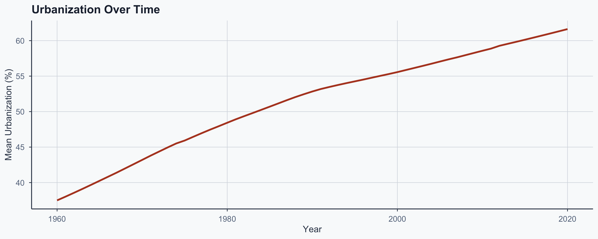
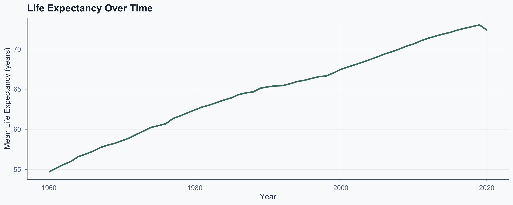
Confounders: A Visual
%%{init:{'flowchart':{'useMaxWidth':true,'nodeSpacing':60,'rankSpacing':60},'themeVariables':{'fontSize':'22px'}}}%%
flowchart TD
Z["Confounder<br/>(e.g., GDP)"] --> X["Urbanization"]
Z --> Y["Life Expectancy"]
X -. "correlation<br/>(not causation)" .-> Y
- GDP drives both: richer → more urban + longer lives
Why \(r \approx\) 0.63 Is Partly an Artifact
- Both variables rise with development over time
- Countries that developed early score high on both
- The \(r =\) 0.63 reflects shared development, not direct cause
- The time-trend plots confirm this parallel movement
Reverse Causation
%%{init:{'flowchart':{'useMaxWidth':true,'nodeSpacing':60,'rankSpacing':60},'themeVariables':{'fontSize':'22px'}}}%%
flowchart LR
X["Urbanization"] -- "?" --> Y["Life Expectancy"]
Y -- "?" --> X
- Does urbanization improve life expectancy?
- Or does higher life expectancy enable urbanization?
- With observational data alone, we cannot tell
What Would We Need?
- Correlation tells us what moves together
- It does not tell us what causes what
- To establish causation, we need:
- Randomized experiments (gold standard)
- Quasi-experimental designs (natural experiments, instrumental variables)
- Always ask: “What else could explain this pattern?”
Your Turn
Exercise: Africa vs. EU
Using the same dataset, answer these questions:
- Define an Africa subgroup (pick 10–15 countries)
- Run a t-test comparing life expectancy: Africa vs. EU
- Check normality with a QQ plot
- Compute and interpret the 95% CI for the difference
- Is the result significant? What is the effect size?
- Bonus: compute Pearson’s \(r\) for Africa alone
Conclusion
Key Takeaways
- T-tests replace z-tests when \(\sigma\) is unknown
- Always check assumptions: QQ plots and Shapiro-Wilk
- Sample size matters: small n → wide CIs, low power
- Confidence intervals quantify estimation uncertainty
- Pearson’s \(r\) measures linear association strength
- Correlation \(\neq\) causation: shared trends inflate \(r\)
Popescu (JCU) Statistical Analysis Lecture 7: T-Tests and Correlations